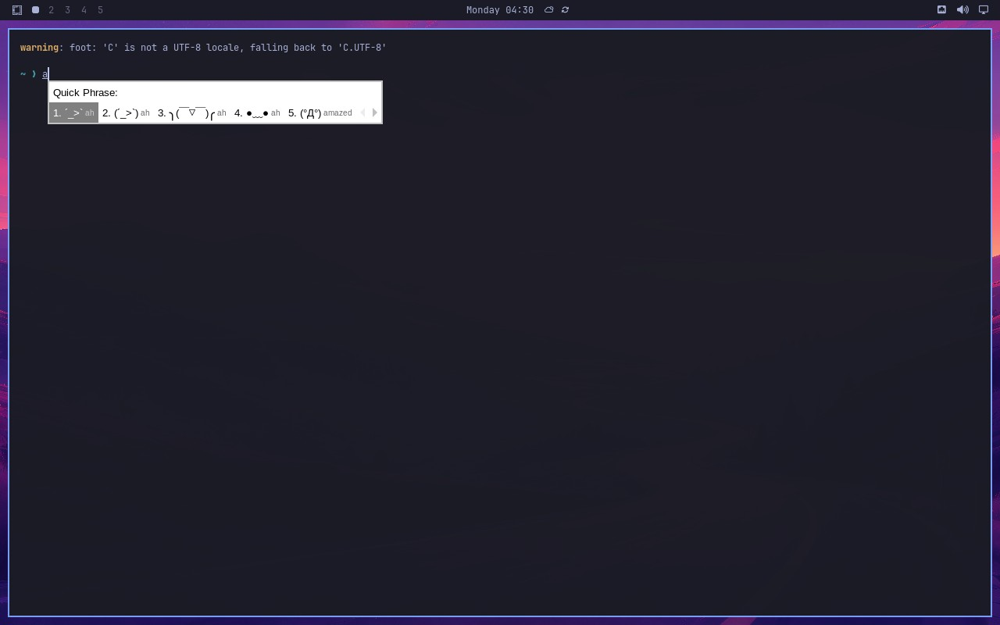

Super+grave — Midscene visual regression evidence
Evidence for upstream PR omacom/omarchy#12756,
issue #12365.
Real Omarchy 4.0.3 VM; Midscene drove the live Hyprland desktop and injected
Super+grave via QEMU QMP send-key (hardware-keyboard path through the
Hyprland bind layer and fcitx5's IM filter). Vision-model assertions on the actual screen;
2/2 cases passed.
CI run: 35583300837.
Super+grave opens the fcitx5 Quick Phrase candidate popup; the keystroke is intercepted.

Open the full self-contained Midscene report (steps, screenshots, model reasoning)
quickphrase.conf with TriggerKey= (treatment)No fcitx5 UI appears; the keystrokes reach the terminal prompt directly.
Open the full self-contained Midscene report (steps, screenshots, model reasoning)